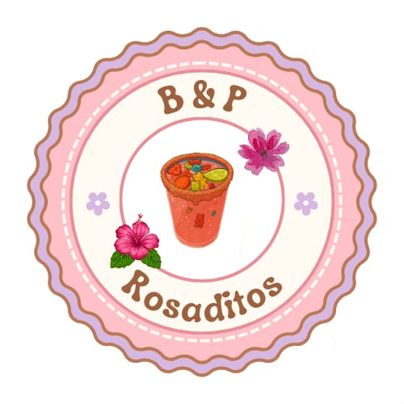
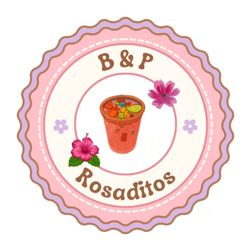

Rosaditos
Bebida fría 

Dulce y frutal con color rosado vibrante. Ideal para quienes prefieren sabores suaves.
Precios
NormalQ12.00
Con gomitasQ15.00
Ingredientes
- Hielo
- Jarabe de fresa
- Jugo de limón
- Refresco lima-limón
- Gomitas / chamoy (opcional)
Receta
- Agrega hielo al vaso.
- Vierte ~30 ml de jarabe de fresa.
- Exprimir un toque de limón.
- Completa con refresco y mezcla suave.
- Decora con gomitas o borde con chamoy.